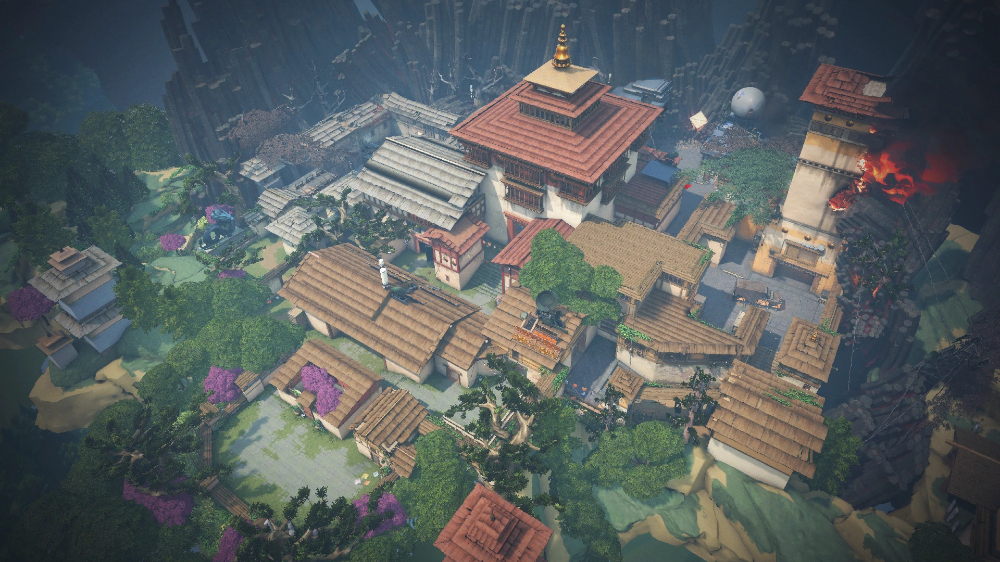
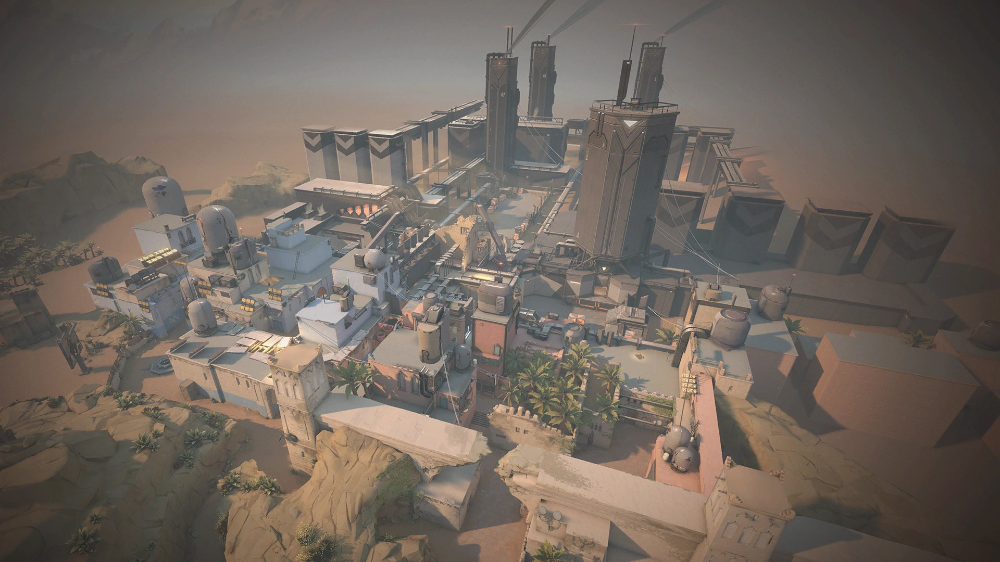
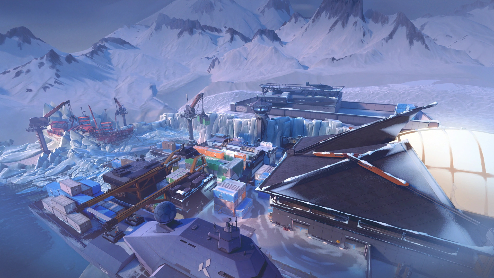
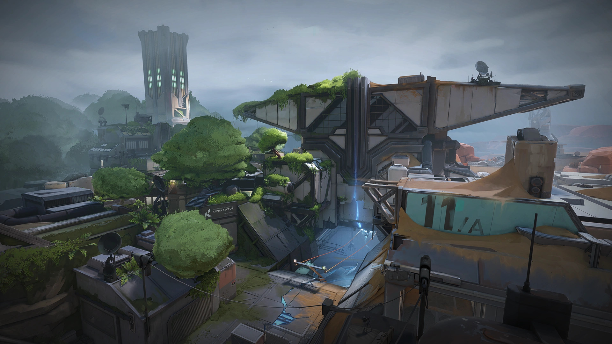
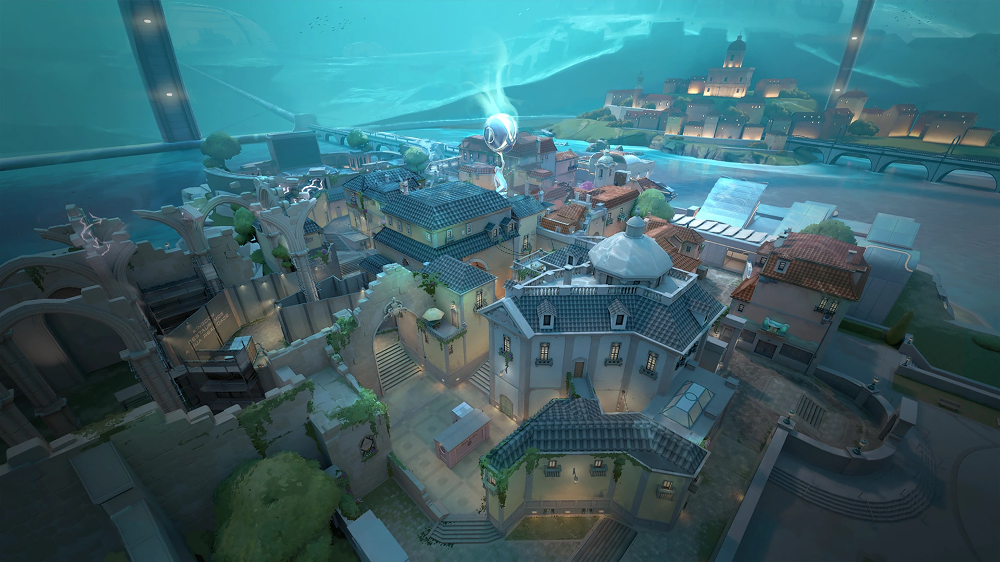
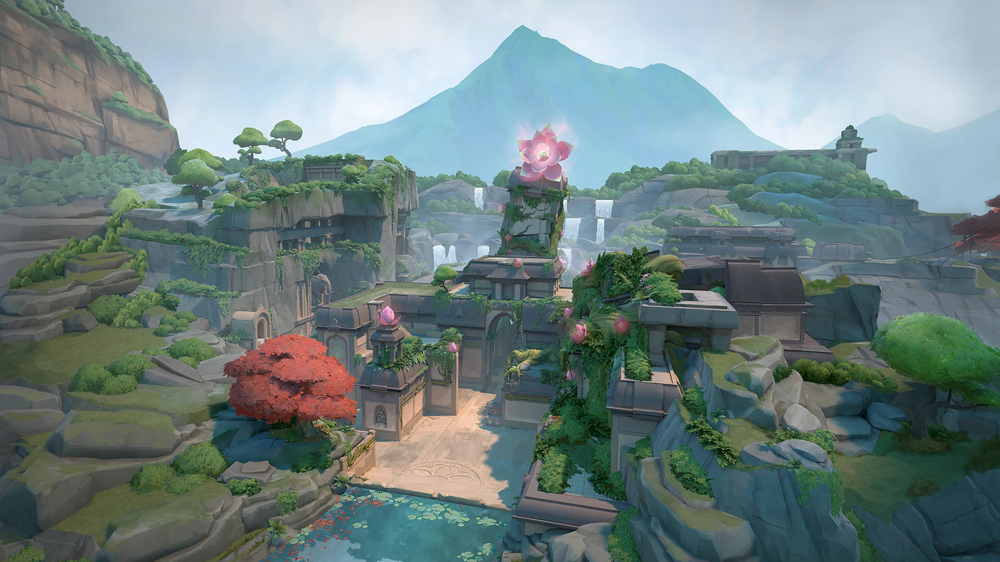
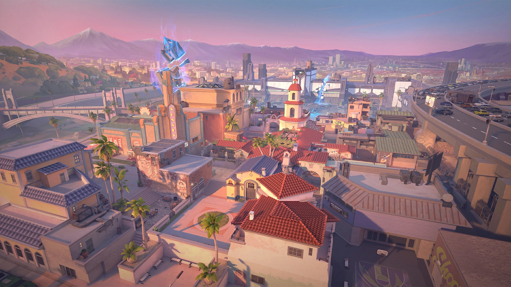
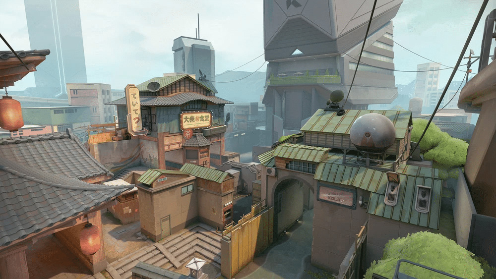
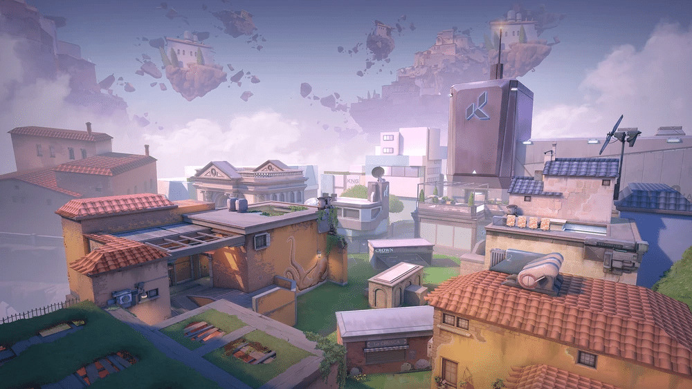
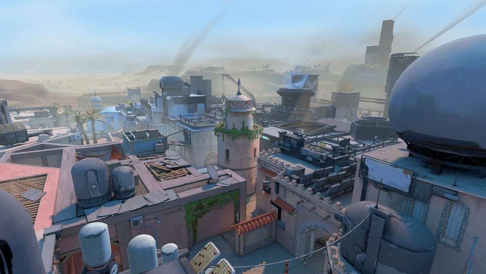

Le système de cartes dans Valorant est un élément clé du jeu qui offre une variété d'environnements pour les affrontements tactiques entre les équipes.
Les cartes de Valorant sont soigneusement élaborées pour offrir des expériences de jeu diverses, que ce soit en planifiant des attaques sur les sites de bombe des cartes classiques ou en se lançant dans des combats effrénés sur les cartes de match à mort par équipe. Chaque carte exige une approche tactique différente et incite les joueurs à collaborer avec leur équipe pour atteindre leurs objectifs.
Les cartes de Valorant sont principalement conçues pour les modes principaux du jeu, hors l'un des modes possèdes ses propres cartes. En effet, ceux du match à mort par équipe sont destinées à un mode de jeu plus décontracté et axé sur l'action et possèdent donc un environnement plus restrint.
Les cartes principales

Haven
Haven est une carte qui se démarque par son architecture non conventionnelle. Au lieu des deux sites de bombe typiques, elle en a trois, ce qui oblige les équipes à adapter leur stratégie. Il y a aussi un certain nombre de portes verrouillées qui peuvent être ouvertes pour changer la dynamique de la carte.
Split
Split est une carte urbaine divisée en deux niveaux distincts, avec un site de bombe sur chacun d'eux. Les nombreuses étroites ruelles et les plates-formes en hauteur font de Split une carte idéale pour les affrontements à longue portée et les duels de précision.

Bind
Bind est une carte située dans un monde mystique avec des portails dimensionnels. Elle est caractérisée par deux sites de bombe étroitement connectés par des téléporteurs. La disposition unique de cette carte encourage des stratégies créatives et des affrontements rapprochés.
Ascent
Ascent est une carte située dans une ville italienne moderne. Elle est caractérisée par sa large zone centrale ouverte et ses chemins tortueux qui la traversent. Ascent est souvent associée à des combats à moyenne portée et à une variété de stratégies.

Icebox
Icebox est une carte qui se déroule sur un navire de recherche abandonné dans l'Arctique. Elle se distingue par ses nombreuses plates-formes et zones en hauteur, ce qui en fait une carte parfaite pour des attaques furtives et des confrontations verticales.
Breeze
Breeze est une carte située sur une île tropicale luxuriante. Elle est la plus grande carte de Valorant, offrant de vastes zones ouvertes et des itinéraires variés. Les affrontements à longue portée et la coordination d'équipe sont essentiels sur cette carte.

Fracture
Fracture est une carte qui se déroule dans un site de recherche souterrain. Elle présente deux sites de bombe connectés par des couloirs souterrains et des zones de combat en surface. Les nombreuses opportunités de flanquement en font une carte exigeante sur le plan tactique.

Pearl
Pearl est une carte située dans une ville sous-marine animée, offrant un environnement de jeu traditionnel à deux sites et trois voies. Contrairement à certaines cartes plus complexes, Pearl ne comporte aucune mécanique ou élément dynamique, mettant en avant les combats à moyenne ou longue portée. Une expérience classique pour les amateurs de tactique.

Lotus
Lotus est une carte qui se distingue par une mystérieuse structure abritant un conduit astral rayonnant d'une puissance ancienne. Cette carte présente trois sites de bombe, avec d'imposantes portes de pierre offrant diverses opportunités de déplacement. De plus, Lotus propose un troisième orbe ultime, ce qui la distingue des autres cartes à trois sites comme Haven. Lotus offre ainsi une expérience de jeu stratégique et variée.

Sunset
Sunset est une carte traditionnelle avec deux sites de bombe et trois voies. La particularité de cette carte est une porte mécanique que les joueurs peuvent ouvrir ou fermer à l'aide d'un interrupteur. Cette carte offre une expérience de jeu classique dans un quartier menacé par une catastrophe, idéale pour des parties dynamiques.
Les cartes du mode Match à mort par équipes

District
District s'inspire de Split et offre un environnement urbain avec des similitudes entre les deux cartes. Avec un total de 13 orbes, dont des orbes d'arme, de récupération et ultimes, District propose des avantages stratégiques. La carte présente des côtés différents, offrant des angles créatifs et des opportunités de couverture pour des combats dynamiques dans un environnement urbain complexe.

Piazza
Piazza s'inspire d'Ascent et partage des similitudes avec cette carte. Elle propose un total de 14 orbes, y compris des orbes ultimes, de récupération et d'arme, ce qui enrichit l'expérience de jeu. La connaissance des emplacements des orbes est cruciale, car ils influencent l'arsenal et le pouvoir ultime. Contrôler la zone centrale revêt une grande importance pour l'avantage tactique, tout comme utiliser des positions élevées pour les tireurs d'élite afin de soutenir l'équipe et avoir une vue d'ensemble sur la carte.

Kasbah
Kasbah s'inspire de Bind et possède des designs similaires. Elle offre un espace de jeu vaste, avec un total de 15 orbes, y compris des orbes ultimes, de récupération et d'arme. La carte encourage les tactiques de tir à longue portée, tout en mettant l'accent sur la prise de contrôle de la zone centrale pour gagner. Elle offre de nombreuses opportunités pour les joueurs de se faufiler et de tirer sur leurs adversaires.